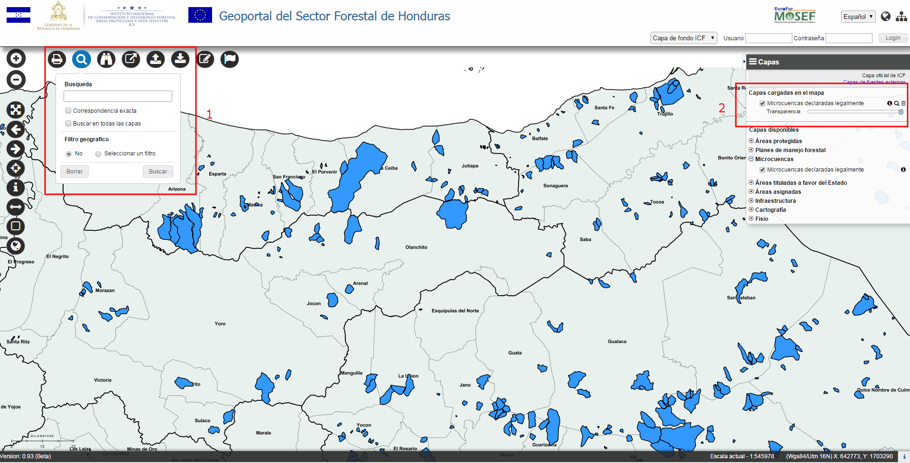
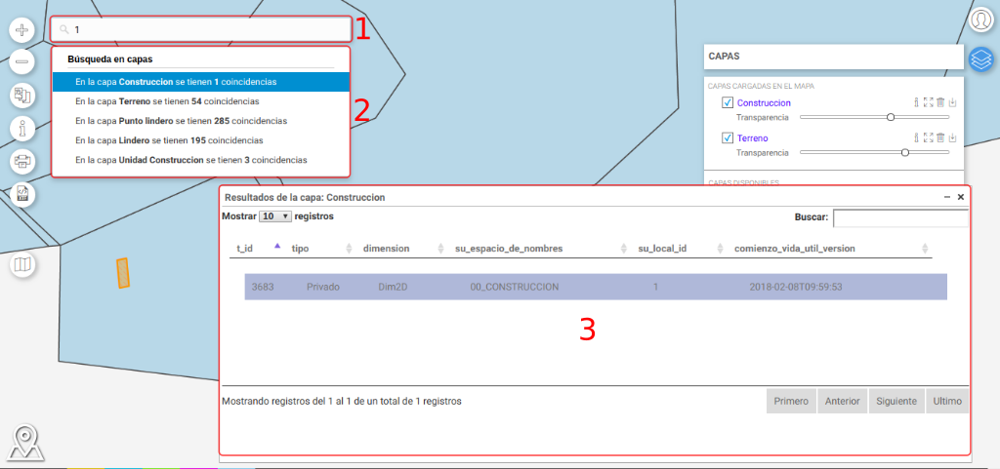
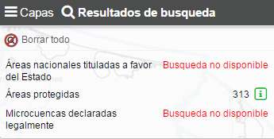
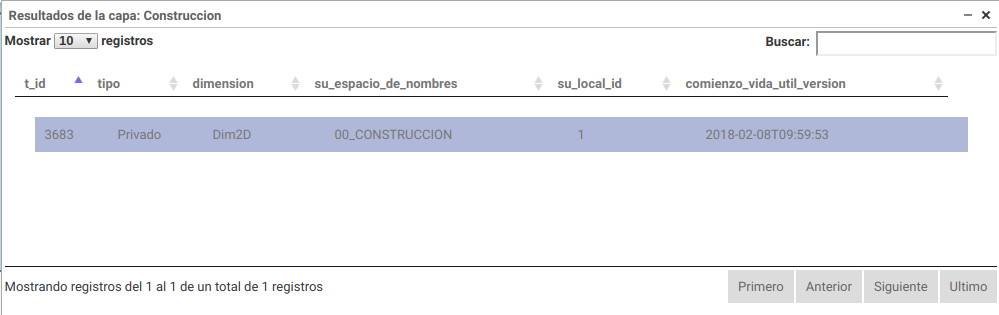
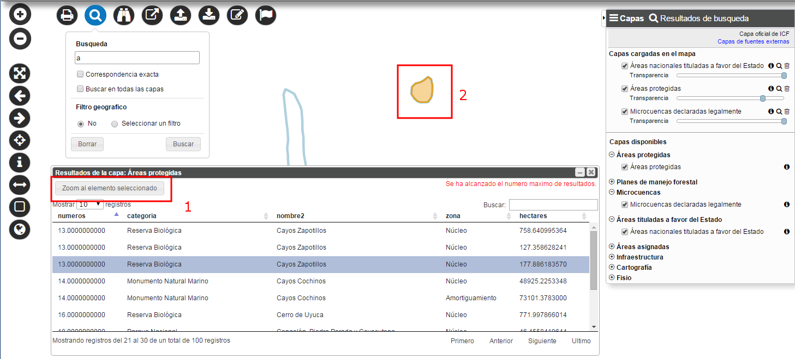

Permite buscar términos adentro de los atributos de las capas actualmente cargadas y visualizadas, estableciendo ciertas condiciones.

Busqueda de datos
A través de la ventana de Búsqueda de datos (Punto 1) el usuario puede definir:

Búsqueda de datos y Resultados
Haciendo clic sobre el botón Buscar (1) , los resultados se visualizan en una lista adentro la pestaña Resultados de búsqueda, en el Panel de las Capas (2).
Por cada capa se enumeran los elementos encontrados y, si la capa no tiene el soporte para la búsqueda, un mensaje que dice que la búsqueda no está disponible. La configuración de la búsqueda es hecha por el Administrador.

Panel de capas - Resultados de búsqueda
Haciendo clic sobre el símbolo verde i a la derecha del nombre de la capa, se abre una tabla con todos los atributos de los elementos encontrados.

Ventana de los Resultados de búsqueda
Haciendo clic sobre el símbolo Borrar Todo, se borran todos los resultados de la búsqueda.

Visualización en el mapa del elemento seleccionado
El botón “Zoom al elemento seleccionado” (1) permite hacer un zoom al elemento seleccionado en la tabla (2).